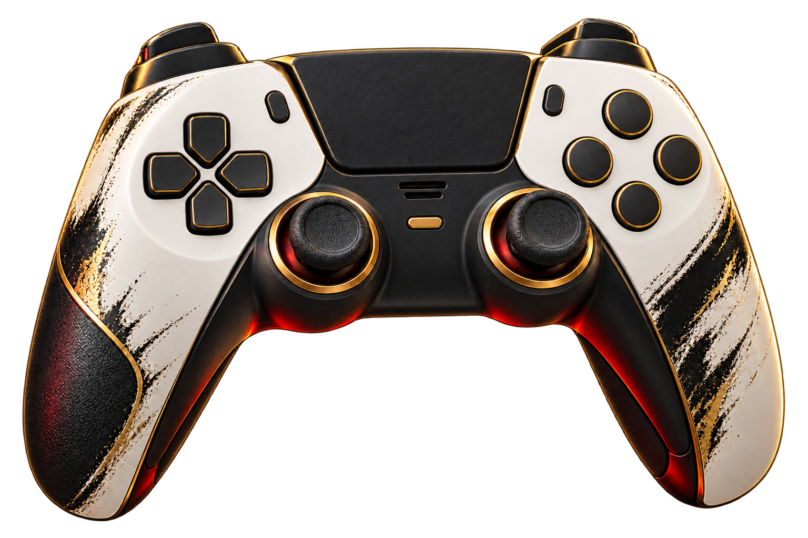

The weight of the blade
Distinct haptics for strikes, guards, deflections, executions and Issen. Bow tension and release are reflected through the right adaptive trigger.
A handcrafted DualSense experience for Onimusha: Way of the Sword on Steam. Sword clashes, soul absorption, traversal and the Oni Gauntlet come alive in your hands.
FREE 10-MINUTE TRIALDownload now. No activation key needed to try every enhancement.

01 — THE EXPERIENCE
Feedback is tied to specific in-game actions, with dedicated patterns for combat, movement and the world around you.
Distinct haptics for strikes, guards, deflections, executions and Issen. Bow tension and release are reflected through the right adaptive trigger.
Feel soul absorption, transformations, charged attacks and staged finishing moves with action-specific feedback.
Ladders, wall runs, treasure chests and selected environmental moments have their own tactile signatures.
Gauntlet voices and key combat sounds play through the controller speaker, with eight independently adjustable volume categories.
Set overall haptic intensity, adjust left and right triggers separately, and tune combat feedback in the companion manager.
OFFICIAL GAME IMAGERY
Scenes from Onimusha: Way of the Sword, published by Capcom on the game's Steam page.


Game screenshots ©CAPCOM. View the original gallery on Steam ↗ Images illustrate the game; controller effects cannot be shown in stills.
From the first clash of steel to the final echo of an Oni strike.
02 — COMPATIBILITY
Built for the Steam PC edition of Onimusha: Way of the Sword on Windows 10/11 x64. Keep Steam Input enabled for this game.
View the game on SteamConnect with a data-capable USB cable for haptics, adaptive triggers and controller audio.
Wireless haptics, triggers and controller audio. Short local tests passed; longer-term stability and device combinations are still being evaluated.
USB support is retained. Bluetooth on Edge has not yet been verified on hardware.
Bluetooth and USB may feel or sound different. Matching latency, audio quality and long-term stability are not guaranteed. When both are connected, USB takes priority.
03 — GET STARTED
The installer includes the runtime and required components. Activation works offline.
Download the free trial installer, close the game, and let the manager locate your Steam game folder. You can choose it manually if needed.
Plug in a DualSense, or pair it in Windows over Bluetooth. In Steam, leave “Enable Steam Input” selected for the game.
Try all enhancements for a cumulative 10 minutes per PC. Enter your offline activation key in the manager when you are ready.
Trial time counts only while the adapter runs with a compatible controller. When it runs out, only the extra controller effects stop.
04 — QUESTIONS
A few practical details about the adapter and its current release.
No. This is an independently developed, unofficial enhancement. Onimusha, DualSense, PlayStation and other marks belong to their respective owners.
The target is the Steam PC version of Onimusha: Way of the Sword on Windows 10/11 x64. It is not a PlayStation console mod and does not include the game.
Yes. The international 2.2 manager and installer are in English. Gauntlet voice playback currently supports Chinese and Japanese. English Gauntlet voices are planned for future updates and will be added gradually.
No. Download the installer here for the free trial. To unlock the full version, contact the seller for an offline activation key tied to your device code.
Install the new version over the existing installation. An in-place update keeps valid activation, trial time and personal settings. Uninstalling first removes activation and settings.
Version 2.2 is not code signed, so Windows may show an unknown publisher or SmartScreen warning. Verify the installer SHA-256 below before running it.
05 — YOUR NEXT SESSION
Download version 2.2 and try all enhancements free for 10 minutes. The full license is US$9.90. Contact the seller on WhatsApp to arrange payment and receive an offline activation key.
Contact on WhatsAppAsk about payment and activation.